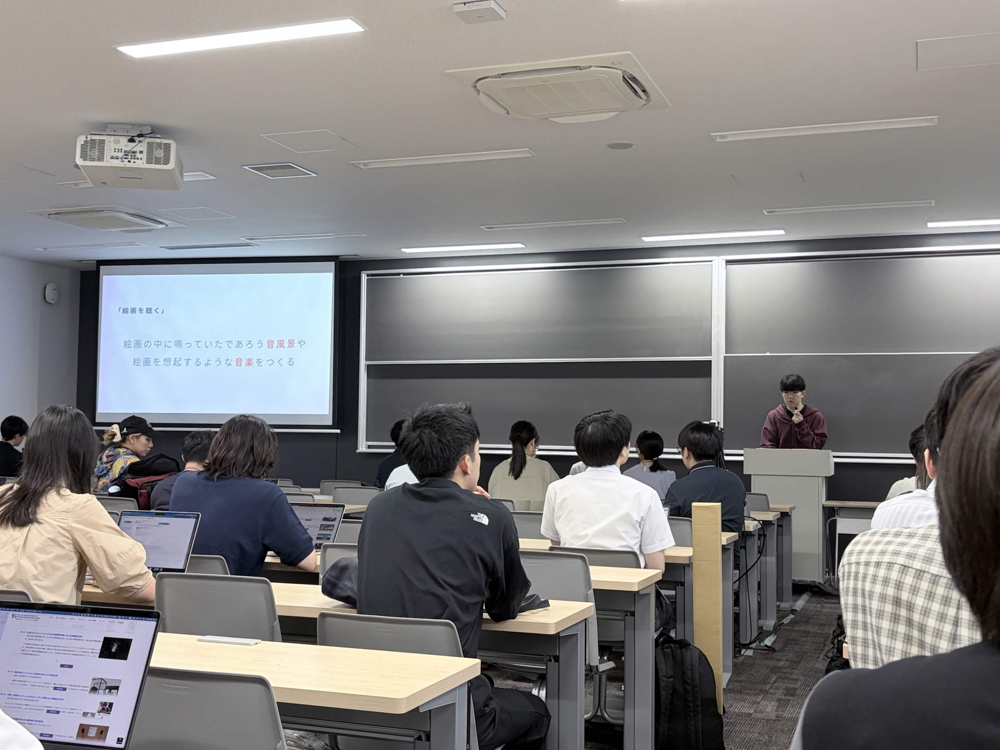

Work — 2026
論文「絵画を聴く」
論文／絵画を聴く／音響的拡張／鑑賞体験／対話／
論文／絵画を聴く／音響的拡張／鑑賞体験／対話／

01
概要
Abstract「絵画を聴く」は、絵画の中に鳴っていたであろう音風景や、絵画を想起させる音楽をつくる作曲実践である。 本研究は、人によって感じ方が異なる絵画という主観的メディアを音響的に拡張し、視覚と聴覚で 作品世界を体験する環境の構築を目指す。
その上で、音の付与が鑑賞体験をどのように拡張するかを分析する。また、ワークショップを行い、 個々の主観性の共有を促し、コミュニケーションの創出にどう寄与するかを考察する。 木枠の没入展示と、Webアプリを使ったワークショップを通して検証した。
キーワード
サウンド・アート、聴覚、クロスモーダル・インタラクション、コミュニケーション
02
発表
Presentation2026年9月、第31回日本バーチャルリアリティ学会大会にて発表を行った。論文は、査読なしの 技術報告として大会論文集に掲載されている。
03
論文
Paper題目：「絵画を聴く」絵画の音響的拡張における鑑賞体験と対話の創出。全文は、学会サイトのPDFからお読みいただけます。